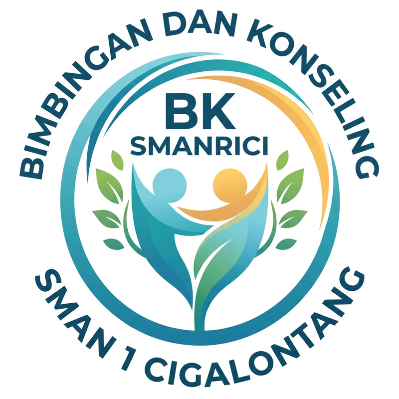

Pemuda dari berbagai daerah berkumpul dan berikrar: satu tanah air, satu bangsa, satu bahasa.
Kita "berkumpul" di grup chat, kolom komentar, dan FYP setiap hari. 📱
"Kamu oke? Aku di pihakmu 🤍"
Nggak setuju? Bantah idenya, bukan orangnya.

BK SMANRICI